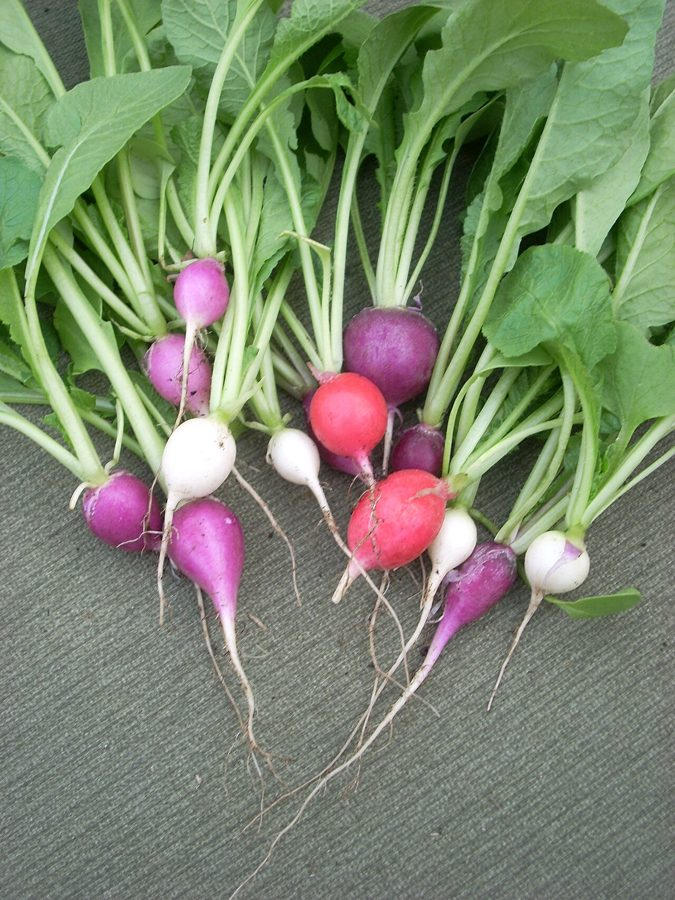

मूलीRadish
Raphanus sativus · Brassicaceae · FLR-0390

- Scientific name वैज्ञानिक नाम
- Raphanus sativus L.
- Family कुल
- Brassicaceae
- Hindi हिंदी
- मूली
- Local names स्थानीय नाम
- mooli, muli, radish
- Status here यहाँ की स्थिति
- cultivated
- Movement आवागमन
- Resident, here all year
- Known from कहाँ दर्ज
- Others have published records from the wider Awadh–Purvanchal plain, none yet from Basti–Ayodhya अवध–पूर्वांचल से दूसरों के प्रकाशित अभिलेख, बस्ती–अयोध्या से अभी नहीं
- IUCN IUCN
- not evaluated
- Review समीक्षा
- not yet reviewed
When to look कब देखें
Present all year. साल भर मौजूद।
Uses and possibilities उपयोग और संभावनाएँ
“Traditional medicine” means a documented traditional use, not a claim that it works. Nothing on this page is medical advice.
Drawn from the documented uses in the profile below, where each is labelled traditional, current or a research lead. All uses →
Tell it apart from इनसे अलग पहचानें
मूली / Radish
Raphanus sativus L. — Brassicaceae
मूली — अवध और पूर्वांचल के मैदानों में शीतकाल की प्रमुख जड़ वाली सब्जी, जिसके तीखे और रसदार कंद तथा पत्ते दोनों बड़े चाव से खाए जाते हैं। इसके सफेद और हल्के बैंगनी फूल सर्दियों के अंत में मधुमक्खियों और तितलियों को आकर्षित करते हैं।
Quick Identification त्वरित पहचान
| Feature | Description |
|---|---|
| Habit | Annual or biennial herb grown for its swollen subterranean taproot |
| Foliage | Basal rosette of deeply lyrate-pinnatifid leaves with rough hispid hairs |
| Root | Fleshy, cylindrical, tapered, or globular hypocotyl-taproot axis; white, pink, or purple |
| Flowers | Four clawed petals arranged in a cross; white or lilac with prominent violet veins |
| Fruit | Spongy, indehiscent, terete pod (silique) ending in a stout conical beak |
| Seeds | Globose, pendulous, yellowish-brown seeds embedded in spongy tissue |
Field tip: Look for basal rosettes of rough, irregularly lobed leaves growing on raised garden ridges. Pulling a mature plant reveals the crisp, succulent root with pungent sap. In late winter, tall branching flowering stems bear distinctive pale cruciform blossoms with delicate violet veining.
हिंदी:
खुरदरे रोएंदार पत्तों का घेरा जमीन पर फैला रहता है।
जमीन के नीचे सफेद या लाल रंग की मोटी, रसदार जड़ बनती है।
तने पर चार पंखुड़ियों वाले सफेद या हल्के बैंगनी फूल खिलते हैं जिन पर बारीक धारियां होती हैं।
Morphology आकारिकी
Measurement not available in consulted sources. Radish is an annual or biennial herb exhibiting high phenotypic variability under cultivation. The vegetative phase is characterized by a condensed crown producing a spreading radical rosette of leaves. The basal leaves are petiolate, deeply lyrate-pinnatifid, possessing a large, broadly rounded terminal lobe and multiple smaller, opposite or alternate oblong lateral lobes. The leaf margins are coarsely crenate or dentate, and the surfaces are scabrid, bearing stiff, scattered hispid hairs that give the foliage a harsh texture.
The primary edible organ is the modified fleshy hypocotyl and taproot, which elongates and swells into a subterranean or partly aerial storage structure. The root varies in form from cylindrical and elongated to fusiform or globular. Its skin is smooth or lightly wrinkled, typically translucent white, though cultivars with scarlet, pink, or deep purple epidermal pigmentation are also planted. The internal flesh is firm, crisp, and pure white, containing radial vascular bundles embedded in succulent storage parenchyma.
During the reproductive phase, the crown elongates into a stout, erect, branched flowering stalk. Cauline leaves on the upper stem become progressively smaller, narrower, subsessile, and less lobed, transitioning to lanceolate or subentire bract-like leaves. The inflorescence is a loose, terminal, ebracteate raceme that elongates continuously as buds mature.
The flowers are regular, bisexual, and tetramerous. The calyx comprises four erect, oblong sepals that are green or faintly purplish. The corolla consists of four obovate petals with long claws, arranged in the characteristic cruciform pattern of the cabbage family. Petals range from pure white to pale lilac or rosy purple, universally inscribed with fine, dark violet veins branching outwards from the claw. The stamens are six and tetradynamous, surrounded by green nectary glands at the base. The ovary is superior and cylindrical, maturing into an indehiscent, spongy silique with a tapering beak.
हिंदी: खुरदरे रोएंदार पत्तों का घेरा जमीन पर फैला रहता है। जमीन के नीचे सफेद या लाल रंग की मोटी, रसदार जड़ बनती है। तने पर चार पंखुड़ियों वाले सफेद या हल्के बैंगनी फूल खिलते हैं।
Behaviour & Ecology व्यवहार एवं पारिस्थितिकी
Raphanus sativus behaves as a short-season annual under intensive cultivation in eastern Uttar Pradesh. While primarily an agricultural domesticate, flowering radish crops play a significant role in early spring agroecosystem ecology. When plants bolt and flower from January through March, they produce abundant nectar and pollen during a seasonal transition when wild herbaceous flora may be scarce.
The entomophilous blossoms are actively worked throughout the day by generalist pollinators, including honeybees, stingless bees, syrphid flies, and small solitary bees. The cruciform flower structure allows easy access to both long-tongued and short-tongued insects. Cross-pollination is strongly promoted by sporophytic self-incompatibility mechanisms present in many traditional open-pollinated landraces.
In the soil environment, the vigorous taproot performs biological loosening of compact silt-loam subsoils.
हिंदी: इसके फूल मधुमक्खियों और तितलियों को भरपूर मकरंद और पराग देते हैं। मोटी जड़ें मिट्टी को ढीला और भुरभुरा बनाने में मदद करती हैं।
Cultivation Calendar खेती का कैलेंडर
According to Duthie & Fuller (1893, Part III, p. 14), radish is sown in August and September and is ready for use in October and November, a little earlier than carrots. It is easily grown and quickly gives a large return, serving as a useful crop to fall back upon in times of scarcity.
हिंदी: दुथी और फुलर (1893) के अनुसार मूली की बुवाई अगस्त और सितंबर में की जाती है तथा यह अक्टूबर और नवंबर में तैयार हो जाती है।
Life Cycle / Phenology जीवन चक्र एवं ऋतुचक्र
Radish seeds germinate promptly within a few days under warm, moist seedbed conditions. The cotyledons emerge epigeally, expanding into heart-shaped green leaves. The seedling rapidly produces true foliage, forming an expansive rosette within a few weeks. Concurrent with leaf production, secondary cambial activity drives rapid radial expansion of the hypocotyl and taproot.
Edible harvest maturity is attained rapidly, typically within several weeks after germination. If plants remain unharvested, increasing day length and rising temperatures in February and March stimulate floral induction (bolting). The vegetative stem elongates rapidly into a tall floral axis, drawing upon stored root starches and moisture, leaving the root pithy and hollow.
Flowering continues for several weeks, with pods setting progressively along the raceme. As embryos develop, the ovary wall thickens into a pithy, cellular tissue that encases the seeds rather than dehiscing along distinct sutures. Pods mature and turn straw-colored by late spring, enclosing viable seeds capable of remaining dormant until the following autumn.
हिंदी: बीज कुछ ही दिनों में उगते हैं और एक-दो महीने में जड़ तैयार हो जाती है। बसंत में पौधे में डंठल निकलकर फूल और फलियां लगती हैं।
Associated Species / Interactions सहजीवी प्रजातियाँ एवं पारिस्थितिक संबंध
Radish fields in the plains support rich assemblages of beneficial insects. Flowering racemes are heavily visited by hoverflies and bees, which provide pollination services while hoverfly larvae feed on aphids. Honeybees and wild bees frequent the flowers in great numbers for nectar and pollen.
हिंदी: इसके फूलों पर मधुमक्खियां और सिरफिड मक्खियां मंडराती हैं।
Pests and Diseases कीट और रोग
Cruciferous crops in the Gangetic plain face a suite of insect pests. Aphids are the most common pests during cool, overcast winter periods, swarming on the undersurface of leaves, inflorescences, and young pods. Painted bugs attack young germinating seedlings and mature seed crops, draining sap from leaves.
Caterpillars of leaf-feeding moths feed on leaf tissue, creating translucent windows before perforating the foliage. Fungal diseases include white rust, recognizable by chalk-like pustules on leaf undersides, and leaf blight, which produces brown zonate spots on older foliage. Cultural control relies on early planting, field sanitation, intercropping, and clean cultivation.
हिंदी: माहू और चितकबरा कीड़ा पत्तों का रस चूसते हैं। पत्तों पर सफेद फफूंद के धब्बे रोकने के लिए फसल चक्र अपनाना चाहिए।
Agricultural / Human Relevance कृषि एवं मानव प्रासंगिकता
Radish is an indispensable vegetable in the rural economy and food culture of Uttar Pradesh. The succulent roots are eaten raw as a crisp accompaniment to meals, sliced into salads, or grated into spiced stuffing for mooli parathas. In traditional domestic cuisine, roots and tender leaves are simmered together with mustard seeds and fenugreek to prepare wholesome winter dry curries. Duthie & Fuller (1893, Part III, p. 14) record that the roots are eaten raw, cooked or pickled; the leaves and young seed pods (singra) are boiled as a vegetable; and the seeds and juice of fresh leaves were used medicinally. This is a record of published traditional use, not medical advice.
हिंदी: मूली के कंद सलाद और पराठे में खाए जाते हैं और पत्तों तथा फलियों की सब्जी बनाई जाती है।
Expected Locally स्थानीय रूप से अपेक्षित
Not a field record. Written from published accounts for eastern Uttar Pradesh. No confirmed local sighting yet — if you have seen it, that is what the atlas needs.
अभी तक स्थानीय पुष्टि नहीं। यह विवरण प्रकाशित स्रोतों से है, किसी अवलोकन से नहीं।
Look in household kitchen plots, canal-irrigated fields, and sandy loam alluvial soils across eastern Uttar Pradesh. It should be looked for during the cold rabi months in vegetable patches and riverine silt terraces.
GBIF holds published records from the wider Awadh–Purvanchal plain, none yet from Basti–Ayodhya.
A first record would be a photograph of the flowering or fruiting plant with place and date, sent through the About page.
Distribution वितरण
Raphanus sativus is cultivated across nearly all inhabited continents. Its wild relatives are indigenous to the Mediterranean, southwestern Asia, and the Black Sea region, with secondary domestication centers postulated in East Asia. Cultivated forms spread across the Indian subcontinent in antiquity and are documented in classical Sanskrit botanical texts. Duthie & Fuller (1893, Part III, p. 14) record that it is cultivated extensively, its area being included with carrots and turnips in the agricultural returns.
हिंदी: यह मूल रूप से यूरेशिया की फसल है, जो पूरे भारत और उत्तर प्रदेश में बड़े पैमाने पर उगाई जाती है।
Research Questions शोध प्रश्न
- How do heat-tolerant cultivars of radish perform physiologically under rising early-summer temperatures in eastern Uttar Pradesh? / क्या गर्मी सहन करने वाली मूली की किस्में पूर्वांचल के बढ़ते तापमान में अच्छी उपज दे सकती हैं?
- What are the primary native wild bee and syrphid pollinator networks supporting radish seed production in the Awadh plain? / अवध के मैदानों में मूली के बीज उत्पादन में कौन सी जंगली मधुमक्खियां मुख्य भूमिका निभाती हैं?
- Does intercropping radish with legumes or alliums reduce mustard aphid infestation levels without chemical pesticide interventions? / क्या दलहन या लहसुन के साथ मूली लगाने से माहू कीट का प्रकोप कम होता है?
- What is the extent of genetic variation among traditional local landraces compared to modern commercial hybrids?
- How does fluctuating soil moisture during hypocotyl elongation affect root pithiness and pungency?
हिंदी: स्थानीय देशी किस्मों और कीट प्रबंधन पर और अधिक वैज्ञानिक शोध की आवश्यकता है।
Similar Species मिलती-जुलती प्रजातियाँ
Radish (Raphanus sativus) is sometimes confused with other cultivated brassicaceous root and oilseed crops during early vegetative stages. Turnip (Brassica rapa, FLR-0269) produces swollen roots, but its root is generally rounded or flattened-globose with green or purple shoulders, its foliage is lighter green and less coarsely hispid, and its flowers are bright yellow rather than white or lilac. Indian mustard (Brassica juncea, FLR-0052) lacks a fleshy storage taproot, bears golden yellow flowers, and produces slender, bivalved, dehiscent pods that split along longitudinal sutures at maturity.
| Feature / Trait | Radish (Raphanus sativus) | Turnip (Brassica rapa, FLR-0269) | Indian Mustard (Brassica juncea, FLR-0052) |
|---|---|---|---|
| Storage Organ | Fleshy cylindrical or tapered taproot | Swollen globose or flattened hypocotyl | Thin, fibrous, branching taproot |
| Petal Colour | White to lilac with dark violet veins | Bright golden yellow | Bright clear yellow |
| Fruit Morphology | Spongy, indehiscent silique with conical beak | Slender, bivalved dehiscent silique | Slender, bivalved dehiscent silique |
| Leaf Texture | Scabrid with stiff, rough hispid hairs | Glabrescent to sparsely bristly | Smooth to lightly glaucous |
| Pod Dehiscence | Indehiscent, breaking into irregular fragments | Splits cleanly along two valves | Splits cleanly along two valves |
Field rule: Radish (Raphanus sativus) is distinguished by its white or lilac petals with dark violet veins and swollen taproot, whereas turnip and Indian mustard bear bright golden-yellow petals.
हिंदी: शलजम की जड़ गोल होती है और सरसों में मोटी जड़ नहीं बनती; इनके फूल भी चटक पीले होते हैं।
Taxonomy & Classification वर्गीकरण एवं नामकरण
Raphanus sativus was published by Carl Linnaeus in 1753 in Species Plantarum. The genus Raphanus belongs to the tribe Brassiceae within the mustard family (Brassicaceae). Cultivated radishes are often divided into distinct horticultural varieties based on root morphology and geography, such as var. radicula for small European round radishes and var. longipinnatus for elongated East and South Asian daikon types. In J. F. Duthie's Flora of the Upper Gangetic Plain, the plant is described as largely cultivated in the plains during the cold season, noting the extraordinary dimensions attained by traditional garden selections.
Original description. Raphanus sativus was named and described by Carl Linnaeus in 1753 in Species Plantarum (vol. 2, p. 669).
Subspecies. Cultivated radishes encompass several recognized varietal groups, including var. radicula (small European round radishes) and var. longipinnatus (elongated Asian daikon radishes).
Family and order placement. The genus Raphanus belongs to the tribe Brassiceae within the mustard family (Brassicaceae), placed in the order Brassicales.
IUCN status rationale. Raphanus sativus is an extensively cultivated crop domesticate grown globally and is categorized as Not Evaluated (NE) on the IUCN Red List.
हिंदी: कार्ल लिनिअस ने 1753 में इसका वर्णन किया था। यह ब्रैसिकेसी (सरसों कुल) का सदस्य है।
Photo Gallery फोटो गैलरी
No photos yet. Images documenting this species from eastern Uttar Pradesh will be added following verification.
References संदर्भ
- Linnaeus, C. (1753). Species Plantarum, vol. 2, p. 669. Laurentii Salvii, Holmiae.
- Duthie, J. F. & Fuller, J. B. (1893). Field and Garden Crops of the North-Western Provinces and Oudh. Part 3. Roorkee: Thomason Civil Engineering College Press, p. 14.
- Duthie, J. F. (1903). Flora of the Upper Gangetic Plain and of the Adjacent Siwalik and Sub-Himalayan Tracts, vol. 1, p. 48. Office of the Superintendent of Government Printing, Calcutta.
- Hooker, J. D., & Anderson, T. (1872). Fumariaceae to Cruciferae. In J. D. Hooker (ed.), The Flora of British India, vol. 1, p. 166. L. Reeve & Co., London.
- GBIF Occurrence Data — Raphanus sativus, India (2025).
Source file: species/flora/crops/radish.md